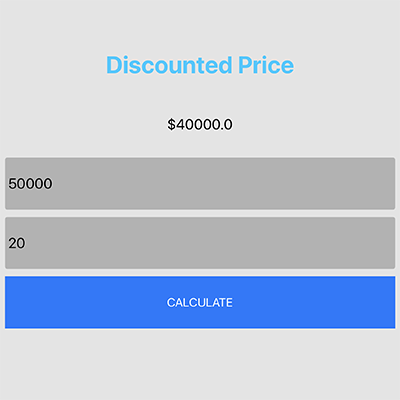
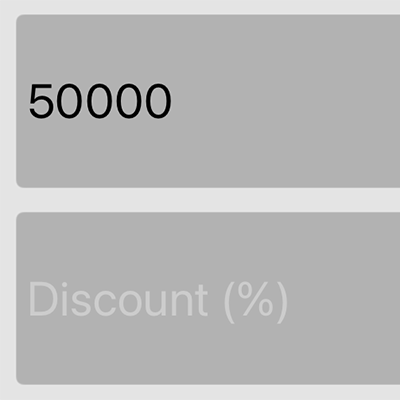
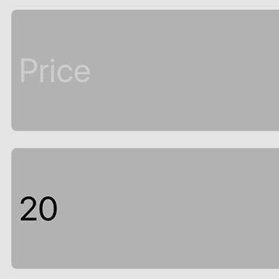

実装機能
|  |
割引した価格を計算する機能 ボタンをクリックしたら、金額と割引率で計算して割引価格を見せます。 |
|  |
価格を入力する機能 金額（定価）を入力できます。 |
|  |
割引率を入力する機能 割引率を入力できます。 |
背景と目的
最近の人々は、モバイルアプリの多くを使用しています。 そのため、iOSアプリの開発者になるために基礎を養うために独自のアプリを実装しました。
最近の人々は、モバイルアプリの多くを使用しています。 そのため、iOSアプリの開発者になるために基礎を養うために独自のアプリを実装しました。
学んだこと
- constraintsでレイアウトを中央に配置する方法と、オブジェクトを下部に配置する方法を学びました。
- Stack Viewの使い方を学びました。
- ボタンをタッチしたときにイベントを呼び出す方法を学びました。
- 入力欄、ラベルなど、レイアウト内のオブジェクトをSwiftで活用する方法を学びました。
- レイアウトのサイズを変更し、ボタンの色を変更するなど、UIをどのように飾るかを学びました。
進行手順
- ’iOS Tutorial (2020) How To Make Your First App’ 講義を聞きながら一つずつフォローしました。
- 独自のプログラムを実装する中で、Vertical Stack Viewは任意に横長を調整できないことがわかりました。 そのため、constraintsでViewを中央に配置した後、水平方向の長さを調整しました。
- レイアウト内のオブジェクトの名前を変更した後、Swiftに再接続しました。 この時、Commandキーを押してマウスでドラッグして接続しました。 そして、ボタンをクリックしたら割引価格が表示されます。
- 入力欄の文字色を変更したり、ボタンの色を変更したりするなど、UIを飾りました。 そして、アプリの名前とアイコンを変更しました。
- このようにして目的のプログラムを実装できました。
能力強化のために最も努力したこと
constraintsでレイアウトの中央に配置とサイズを変更
constraintsでレイアウトの中央に配置とサイズを変更
全体構造

使用技術
iOS, Swift
iOS, Swift
開発環境
Xcode 13.2.1
Xcode 13.2.1
追加の説明